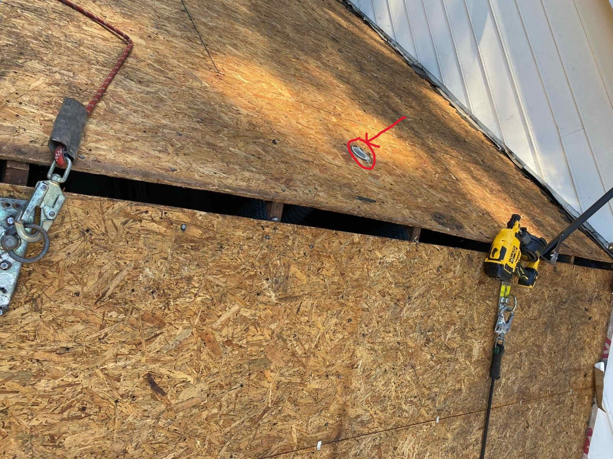
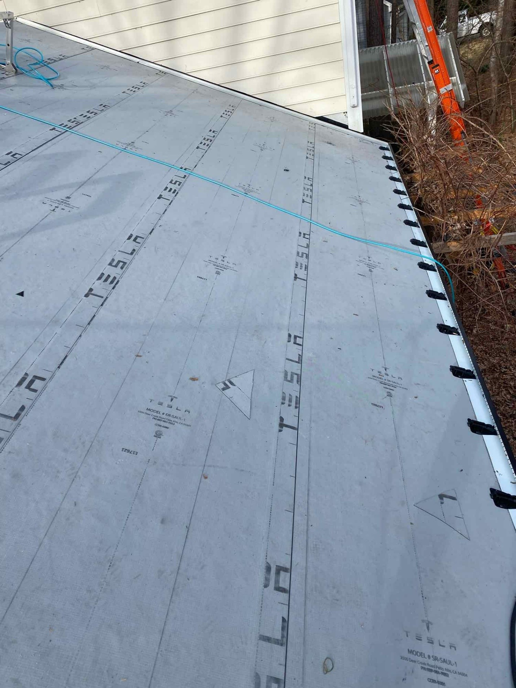
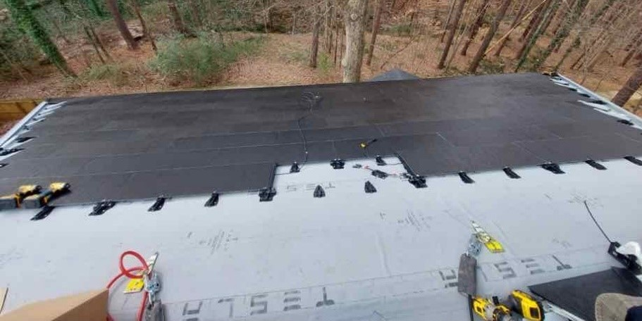
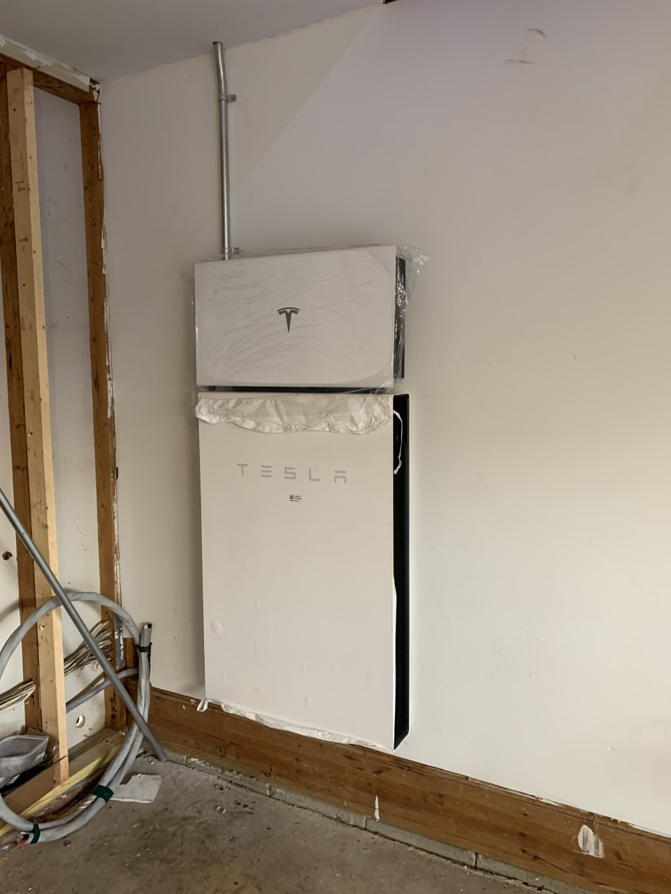

Chimneys are Dumb
In preparation for the roof I tore down my chimney. These house were built in the late 1980s are complete junk. Don’t get me going on the cheap material and dumb stuff they did. As you can see from the pictures it was very easy to remove and we only used the fireplace once. We replaced the fireplace with a large window. The light it allow in the house is so much better. This allowed easier installation of the new roof, is a cleaner look, and one less area for leaks and for leaves will hang up.
Removal
There is also no venting coming through the roof from the bathrooms, i.e. one less place for a leak. Because there is about a 2 inch gap between the roof decking and the panels. The bathroom vent tubes can all be cut flush with the roof, marked above in red. Then rubber roofing is cut and formed so if there is ever a leak it will go directly into the sewer system. Very slick and really cleans up the roof nicely. You may be able to tell the spacing of the trusses in the garage is 24 inches, well built houses are at 16 inch spacing.
Underlayment
In our case all the shingles were removed down to the decking. Tesla doesn’t do this if the roof shingles are newer but my roof was in very bad shape. Over the last 5 years I was sealing around vents and replacing shingles as needed until I could get this roof in North Carolina. Once the old shingles are removed there is a rubber type roof placed over the wood decking. This material is tough and could serve as a standalone roof in itself. If there is ever a chance that water gets past the panels this material will shed the water into the gutters through the bottom vents, see the gutters for pictures. This stuff is extremely sticky on one side and sticks the wood decking.
Installing the Panels
The panels are held down with brackets that are nailed to the roof and the panels have clips on them that allow them to attach the brackets. It also allows for the panels to be removed. Using a rubber pry bar, with some force the panels can be removed. These panels are very smooth and you would never go up there when they are even slightly wet. To walk on the roof they highly recommend wearing a harness and roping up. My roof has two spots on it that you pop the panel off and underneath attached to the decking are hooks to rope into. If you are a rock climber this roof is perfect for you.
The PowerWall
I cleaned up an area and painted the walls. Of course the wiring goes through the attic. The Powerwall goes near the panel and mine fit perfectly in the garage.